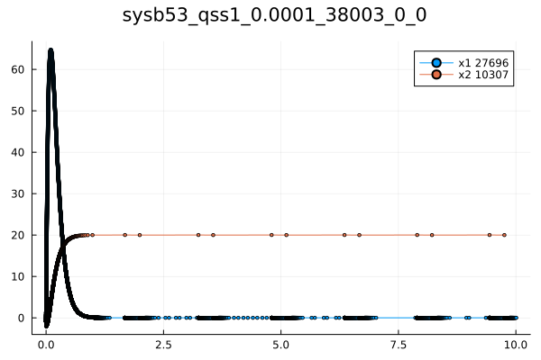
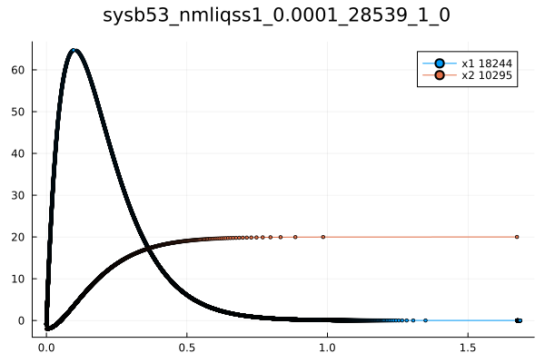
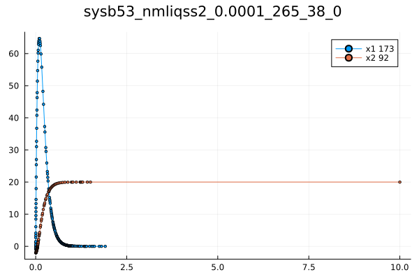

Examples:
Systems of 2 Linear Time Invariant Differential equations
odeprob = NLodeProblem(quote
name=(sysb53,)
u = [-1.0, -2.0]
du[1] = -20.0*u[1]-80.0*u[2]+1600.0
du[2] =1.24*u[1]-0.01*u[2]+0.2
end)
tspan=(0.0,1.0)This is a great example that shows when we need to use the explicit qss, the implicit liqss, or the modified implicit nmliqss. This is a stiff problem so we need to use the implicit methods, but it also contains larger entries outside the main diagonal of the Jacobian. Therefore, nmliqss should the most appropriate algorithm to use. The nmliqss plot does not finish at the final time because it terminated when it reached the equilibrium in which the values are the same as the values at the final time.
sol=solve(odeprob,qss1(),tspan)
save_Sol(sol)
sol=solve(odeprob,qss2(),tspan)
save_Sol(sol)
sol=solve(odeprob,liqss1(),tspan)
save_Sol(sol)
sol=solve(odeprob,liqss2(),tspan)
save_Sol(sol)
sol=solve(odeprob,nmliqss1(),tspan)
save_Sol(sol)
sol=solve(odeprob,nmliqss2(),tspan)
save_Sol(sol)
The Tyson Model
function test(solvr,absTol,relTol)
odeprob = NLodeProblem(quote
name=(tyson,)
u = [0.0,0.75,0.25,0.0,0.0,0.0]
du[1] = u[4]-1e6*u[1]+1e3*u[2]
du[2] =-200.0*u[2]*u[5]+1e6*u[1]-1e3*u[2]
du[3] = 200.0*u[2]*u[5]-u[3]*(0.018+180.0*(u[4]/(u[1]+u[2]+u[3]+u[4]))^2)
du[4] =u[3]*(0.018+180.0*(u[4]/(u[1]+u[2]+u[3]+u[4]))^2)-u[4]
du[5] = 0.015-200.0*u[2]*u[5]
du[6] =u[4]-0.6*u[6]
end )
println("start tyson solving")
tspan=(0.0,25.0)
sol=solve(odeprob,solvr,abstol=absTol,reltol=relTol,tspan)
println("start saving plot")
save_Sol(sol)
end
absTol=1e-5
relTol=1e-2
solvrs=[qss1(),liqss1(),nmliqss1(),nmliqss2()]
for solvr in solvrs
test(solvr,absTol,relTol)
endThis model also is stiff and it needs a stiff method, but also the normal liqss will produce unnecessary cycles. Hence, the nmliqss is again the most appropriate.


Oregonator; Vanderpl; Loktavoltera